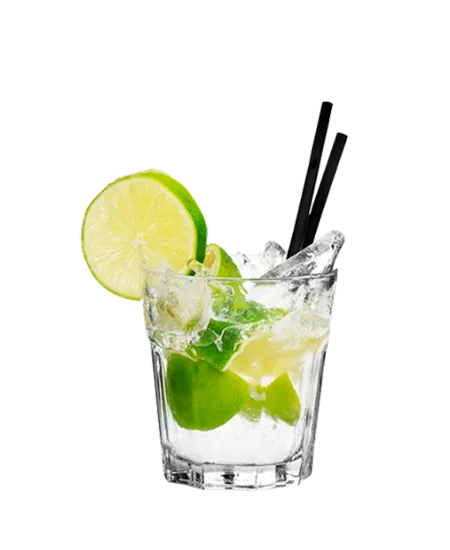

Ingredientes (para 1 persona)
- 50 ml de cachaça
- 1 limón cortado en trozos
- 2 cucharaditas de azúcar
- Hielo
Preparación
- Coloca los trozos de limón con azúcar en un vaso y machácalos.
- Agrega la cachaça y mezcla.
- Llena con hielo y remueve bien.